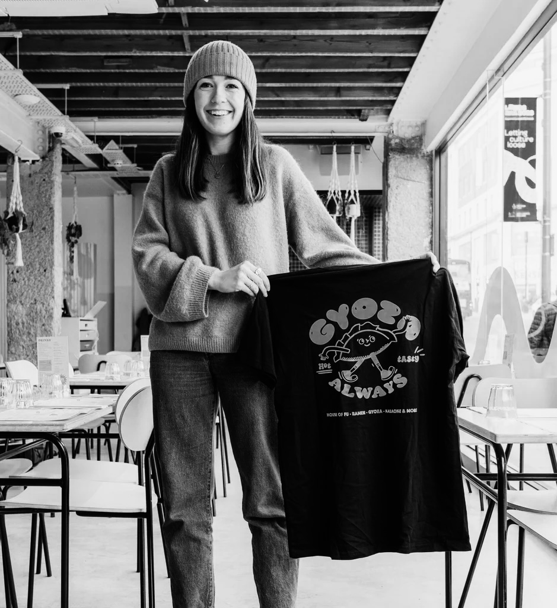

Hattie Clark
Le illustrazioni di Hattie Clark sono un puro riflesso del suo carattere:
amichevole, gentile ed entusiasta. Disegna il tipo di persone con cui vuoi
sederti e prendere una tazza di tè. Con sede a Leeds (Regno Unito), Hattie
ha perfezionato il suo autoproclamato stile di illustrazione "traballante"
e ama disegnare un'ampia varietà di soggetti, tra cui persone, animali ed
edifici. Può lavorare sia in digitale che a mano, utilizzando pennello e
inchiostro (vedi se riesci a individuare quale è quale).
Alcune delle persone con cui Hattie ha lavorato finora includono:
Stagecoach, Stack Magazines, Pieminister, Lucy and Yak, The Charity for
Civil Servants, Bath Spa University, House of Fu, Leeds Bid.
Prevediamo che sia un elenco che crescerà e crescerà!